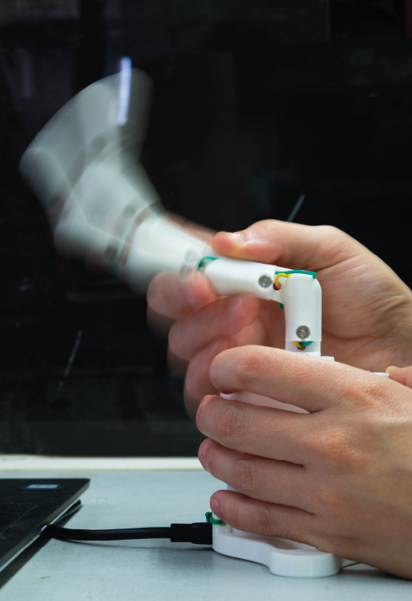
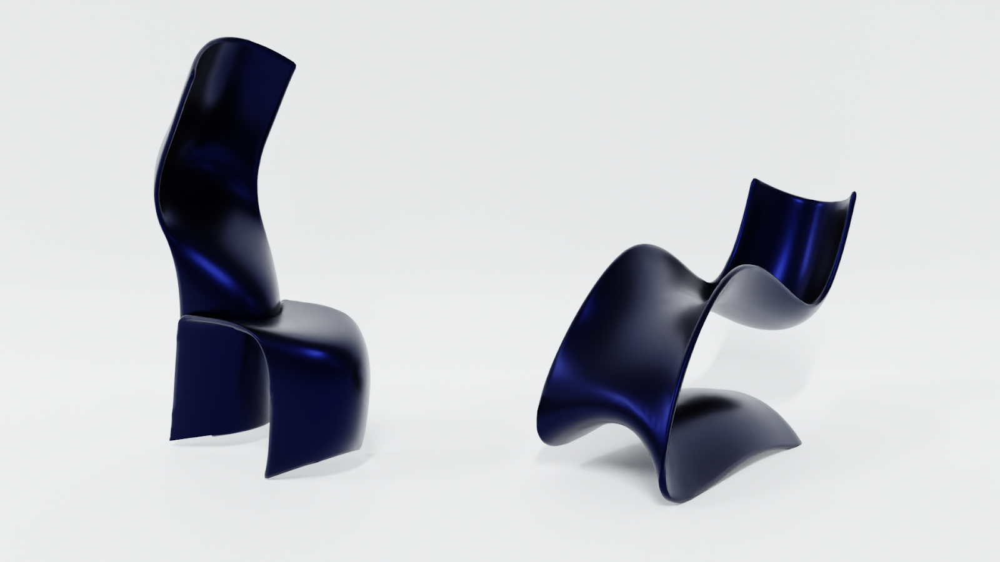
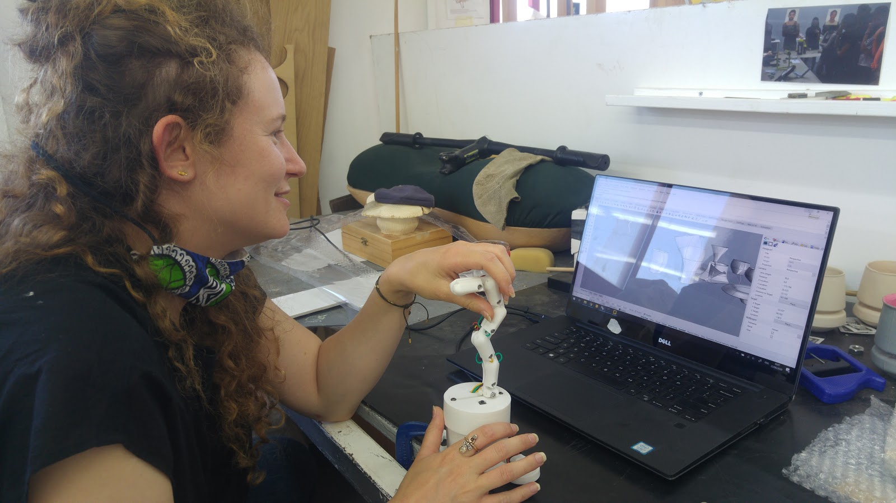
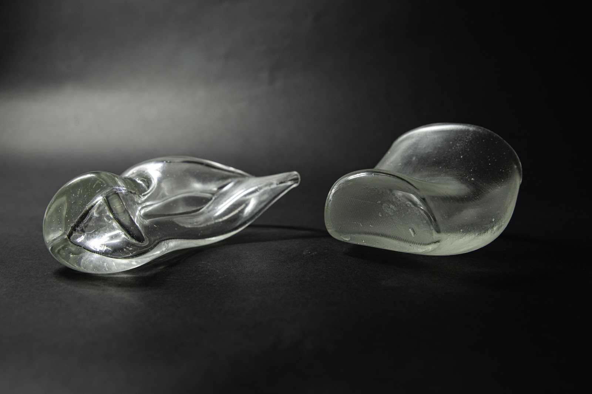
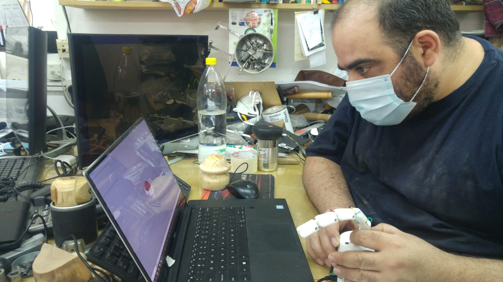
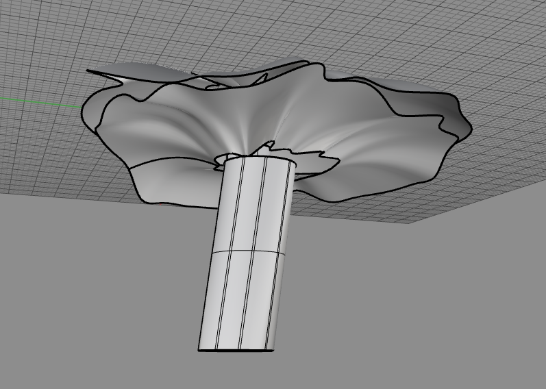
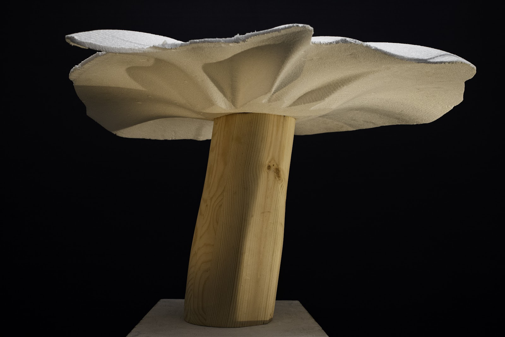

CADmanship
The project explores the process of creating in digital 3D space and presents a unique physical interface that enables intuitive sculpting of complex surfaces. CADmanship aims to translate the mental intention and physical action of creators (designers, architects, craftsmen) directly into the digital realm.

How it works
Five links control the curve, each connected to a potentiometer. A linear potentiometer on the control changes the curve's distance from center. A rotary encoder at the heart of the device rotates the curve around the center axis.
By pressing a button, users "freeze" the curve in space, creating a loft surface between successive curves. After a few clicks, a complex 3D shape emerges.

Durable Prototype
The first prototype was fragile. To allow uninterrupted testing, a sturdier version was built. Around this time I recognized the importance of navigating within 3D space: an additional button transitions to navigation mode, letting the camera orbit and tilt while the tool rests.

Exploratory Phase
Using the tool to sketch chairs, I began to see that it generates a distinct aesthetic language. The curves it produces aren't things you'd easily draw by hand; they're artifacts of a particular kind of physical input. I started wondering what other makers might find with it.

Collaboration: Ella Fischer Leventon
Glass and Ceramics student at Bezalel Academy. Ella integrated the tool into the glass blowing process, creating two objects, 3D-printing them, casting molds, and blowing glass from them.
Watch the process ↗

Collaboration: Shalom Schwartz
Head of workshops at Bezalel's Industrial Design department. Together we tested the tool by creating a mushroom: Shalom turned the base by woodturning while the head was designed with CADmanship and CNC milled using a robotic arm.
Watch the process ↗

